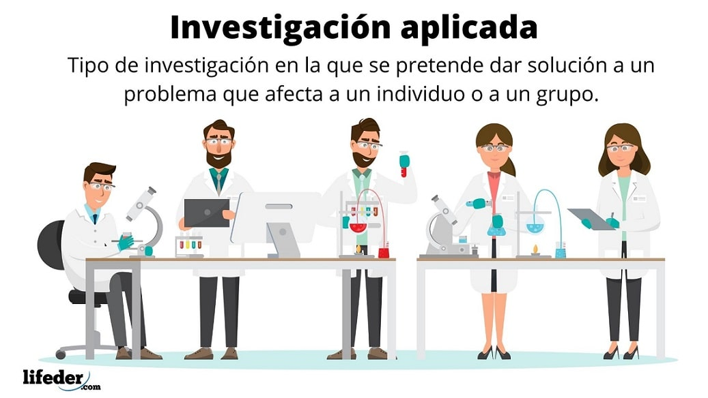

¿Qué es la Investigación Aplica?
La investigación aplicada es un tipo de investigación que tiene como objetivo resolver problemas prácticos y aplicar los resultados obtenidos en la práctica. A diferencia de la investigación pura o básica, que busca expandir el conocimiento teórico sin una aplicación directa, la investigación aplicada se enfoca en la aplicación práctica de los hallazgos y la generación de soluciones concretas.
Caracteristicas de la Investigación Aplicada:
- Orientación práctica: La investigación aplicada se centra en la resolución de problemas prácticos y la aplicación de los resultados en situaciones reales. Busca generar conocimiento que sea útil y relevante para la práctica y la toma de decisiones.
- Colaboración con la industria o sector relevante: La investigación aplicada tiende a colaborar estrechamente con organizaciones, empresas, instituciones o sectores específicos. Busca abordar problemas y necesidades identificados en esos contextos y trabajar en estrecha colaboración con los actores involucrados.
- Resultados concretos y aplicables: La investigación aplicada busca obtener resultados concretos y aplicables en la práctica. Los hallazgos y soluciones desarrollados pueden ser implementados para mejorar procesos, productos, políticas o servicios.
- Enfoque interdisciplinario: La investigación aplicada puede requerir la integración de diferentes disciplinas y enfoques para abordar problemas complejos. Se aprovechan conocimientos y metodologías de diversas áreas para proporcionar soluciones holísticas.
- Evaluación de impacto: En la investigación aplicada, se valora la evaluación del impacto de las soluciones propuestas. Se busca medir y analizar los resultados obtenidos en términos de su efectividad, eficiencia y beneficios para la práctica y los usuarios finales.
¿Para que sirve la Investigación Aplicada?
La investigación aplicada tiene como objetivo principal aplicar los hallazgos de la investigación en la práctica para resolver problemas, mejorar la toma de decisiones, fomentar la innovación y optimizar recursos. Al enfocarse en la aplicación práctica de los resultados, la investigación aplicada tiene un impacto directo en la mejora de la sociedad y en la generación de soluciones concretas para los desafíos que enfrentamos.
